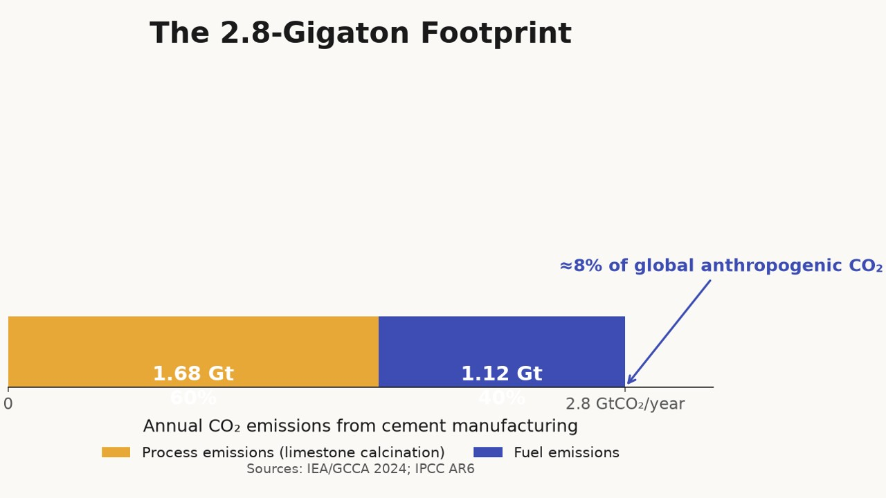
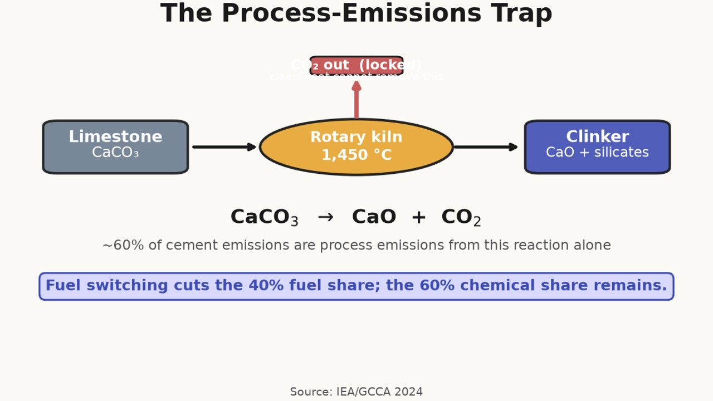
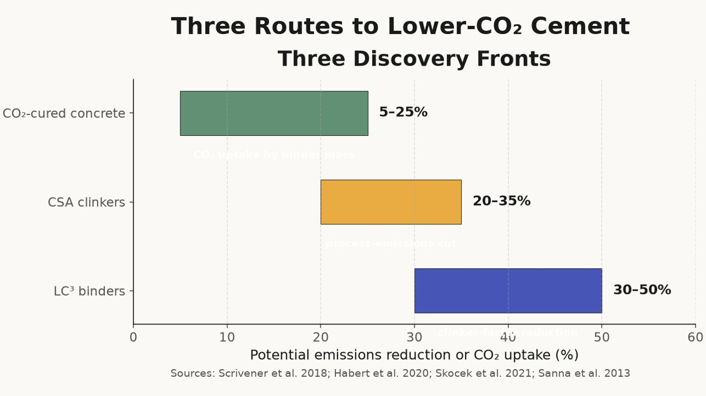
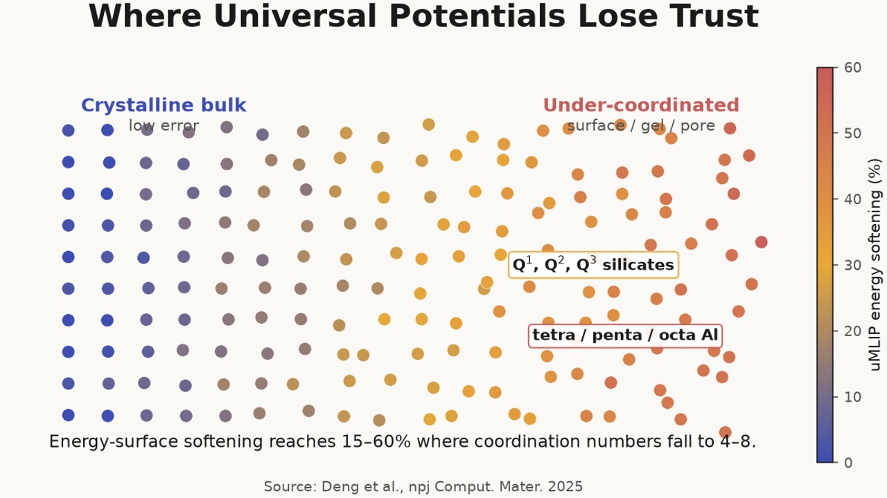
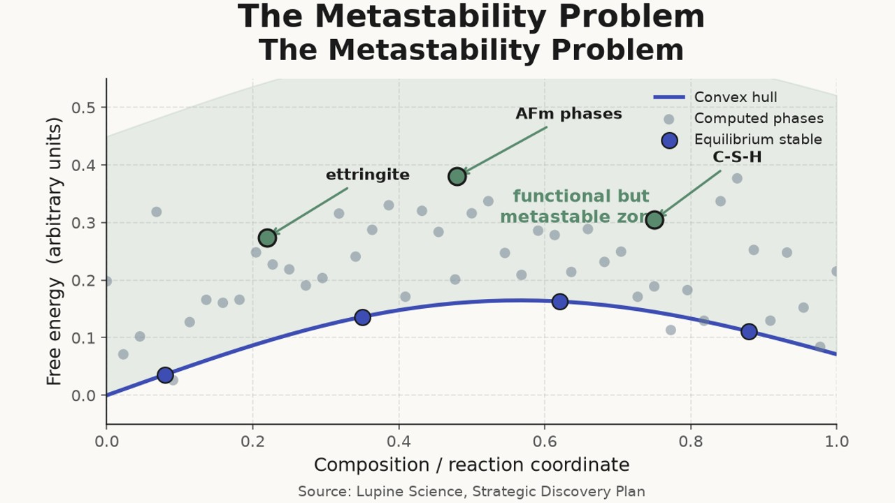
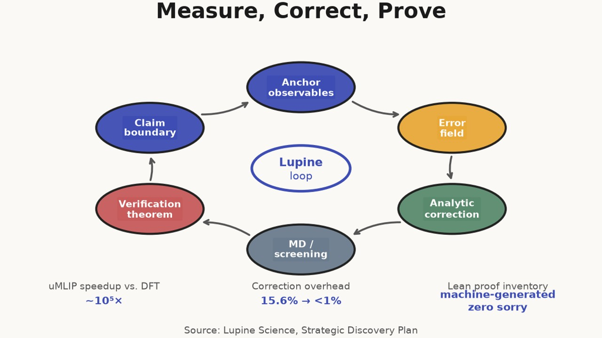
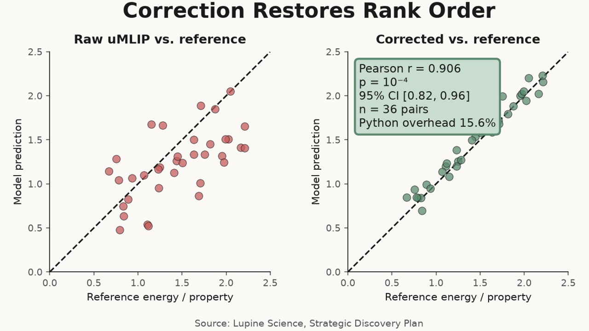
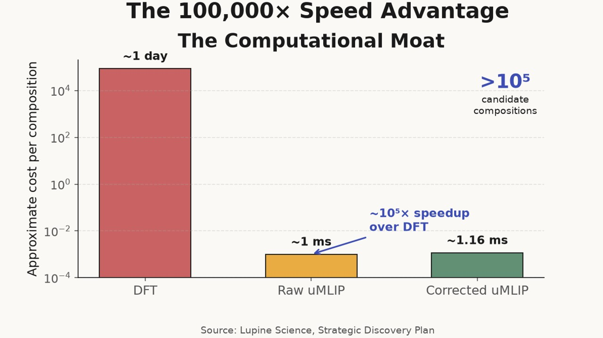
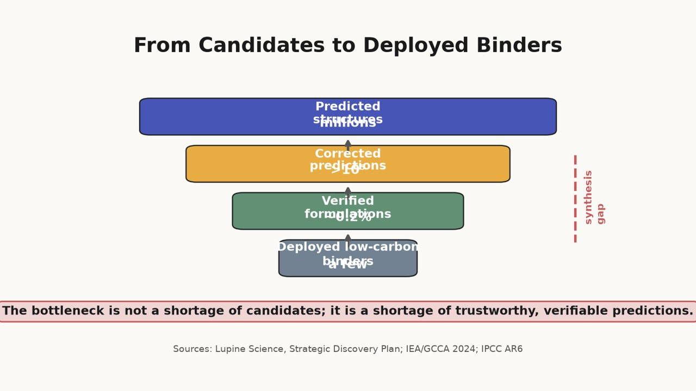

Cement, Concrete, and the Weight of the Built World
article
How corrected universal machine-learning interatomic potentials can accelerate low-CO₂ binders, alternative clinkers, and CO₂-cured concrete by taming amorphous and metastable phase chemistry.

Concrete is the most widely used manufactured material on Earth. It forms our roads, bridges, dams, foundations, and a growing share of the cities where most of humanity now lives. The binder that holds concrete together — ordinary Portland cement (OPC) — is also one of the most carbon-intensive commodities produced. Global cement manufacture emits roughly 2.8 GtCO₂ per year, about 8% of anthropogenic CO₂ emissions[1][2]. Unlike steel or ammonia, where renewable hydrogen and electric heating can in principle eliminate most emissions, roughly 60% of cement emissions are process emissions: the calcination of limestone (CaCO₃ → CaO + CO₂) releases CO₂ regardless of the fuel source[1:1]. Decarbonizing cement therefore requires new chemistries, not just clean kilns.

This article, the last in the environmental-expansion series, examines cement as a materials-discovery problem. The pathways to low-carbon cement — alternative binders, alternative clinkers, and CO₂-cured concrete — all depend on phases that are amorphous, metastable, or multi-component. These are exactly the conditions where standard computational methods fail and where universal machine-learning interatomic potentials (uMLIPs) systematically soften the potential energy surface[3]. Lupine’s correction-and-verification method was built for precisely this geometry of wrongness. It measures the error field over local coordination environments, adds analytic corrections at runtime, and proves which predictions are supported and which are synthesis-dependent[4].

The process-emissions trap
Portland cement is made by heating limestone, clay, and small amounts of iron and aluminum raw materials to about 1,450 °C in a rotary kiln. The product, clinker, is ground with gypsum and often with supplementary cementitious materials (SCMs) such as fly ash or blast-furnace slag. The resulting powder hydrates when mixed with water, forming calcium-silicate-hydrate (C-S-H) gel, the binding phase that gives hardened concrete its strength[5].
The emissions come from two sources. The first is fuel combustion to reach kiln temperature; this roughly 40% share can be reduced with electrification, biomass, hydrogen, or waste heat, though each option has scaling limits. The second, larger source is the decomposition of calcium carbonate itself. As long as limestone is the primary calcium feedstock, CO₂ is an intrinsic product of the chemistry. The IEA and the Global Cement and Concrete Association estimate that reaching net-zero cement by 2050 will require a combination of energy efficiency, alternative fuels, alternative feedstocks, alternative binders, and post-combustion carbon capture[1:2].

Alternative binders and clinkers aim to replace or reduce the CaCO₃-derived lime content. Calcined clay combined with limestone (LC³) can cut clinker factors by 30–50% while maintaining performance[6]. Geopolymers, made from alkali-activated aluminosilicates such as fly ash or slag, avoid Portland chemistry entirely[7]. Belite-rich or calcium-sulfoaluminate clinkers can be fired at lower temperatures and absorb less limestone-derived CO₂[8]. CO₂-cured concrete, by contrast, keeps OPC chemistry but replaces part of the hydration pathway with rapid carbonation, turning CO₂ into stable calcium carbonate while gaining early strength[9]. None of these routes is yet deployable at the scale of ordinary cement, and all of them face materials-science bottlenecks that computation can address — provided the computation is trustworthy.
Three discovery fronts
Alternative binders: amorphous networks as the functional phase
The most promising alternative binders — slag, fly ash, calcined clay, and geopolymers — are not crystalline minerals that can be solved by X-ray diffraction and modeled with a single unit cell. They are glasses, gels, or nanocrystalline assemblages in which reactivity and durability are controlled by the distribution of Si–O, Al–O, and Ca–O bond environments. Blast-furnace slag is a calcium-alumino-silicate glass. Calcined kaolinite (metakaolin) is a layered aluminosilicate whose reactivity depends on the degree of dehydroxylation and disorder. Geopolymer gels are three-dimensional aluminosilicate networks whose stoichiometry and nanoporosity evolve during curing[7:1][10].
These materials are difficult to model with density functional theory (DFT) because DFT is most reliable for well-defined crystalline unit cells with periodic boundary conditions. Amorphous or nanocrystalline models require large supercells and statistical sampling, making DFT prohibitively expensive for screening. uMLIPs are fast enough, but they are trained on bulk equilibrium structures and misrepresent the under-coordinated Si–O and Al–O bonds that dominate dissolution, gelation, and precipitation[3:1]. A predicted dissolution rate that is off by a factor of two or three is enough to misrank a binder formulation.

The coordination problem is structural. In a crystalline quartz framework, silicon is tetrahedrally coordinated and oxygen is bridging; the local environment is close to the bulk training distribution. In a partially dissolved slag grain or a nascent geopolymer gel, silicon may be present as Q¹, Q², or Q³ species with one, two, or three bridging oxygens, and aluminum may occupy tetrahedral, pentahedral, or octahedral sites depending on pH and charge compensation. These environments have coordination numbers and bond angles that fall outside the bulk distribution, and uMLIPs systematically soften their energies[3:2].
Lupine’s environment error field treats this as a measurable departure rather than an unknowable model failure. The field is anchored to three observable reference environments and extrapolates to under-coordinated configurations with a smooth, bulk-constrained spline[4:1]. For amorphous binder networks, corrected Si–O and Al–O bond energies recover accurate dissolution and gelation energetics, so screens rank formulations by reactivity and durability rather than by training-set bias.

Alternative clinkers: multi-component oxide spaces
Alternative clinkers replace or supplement alite (C₃S), the dominant and most carbon-intensive phase in OPC, with phases such as belite (C₂S), ye’elimite (C₄A₃Ŝ), or ferrite solid solutions[11]. Calcium-sulfoaluminate (CSA) clinkers, for example, can be produced at 1,200–1,300 °C rather than 1,450 °C and require less limestone, cutting process emissions by 20–35%[8:1]. Belite-rich cements lower the lime saturation factor and can incorporate more SCMs. The challenge is that these clinkers involve multi-component oxide spaces — CaO–SiO₂–Al₂O₃–Fe₂O₃–MgO–SO₃ and beyond — whose phase equilibria, hydration pathways, and impurity sensitivities are far more complex than OPC.
Brute-force DFT exploration of these spaces is economically infeasible. A single clinker composition may require calculations for the anhydrous phase, the hydrated assemblage, the presence of alkalis and sulfates, and the effect of minor elements. The number of candidate compositions exceeds 10⁵ when dopants, substituents, and processing conditions are included. uMLIPs can screen this space at roughly 10⁵× the speed of DFT[4:2], but only if their rankings are trustworthy.
The ranking problem is aggravated by metastability. The best-performing clinker/hydrate combinations are often not the equilibrium assemblages predicted by convex-hull thermodynamics. Ettringite, AFm phases, and certain C-S-H compositions are metastable yet functionally essential. Standard computational screens that discard anything above the convex hull therefore discard the most useful phases. Lupine’s verification layer addresses this by proving boundaries: it separates predictions that are supported by the measured error field from predictions that depend on synthesis conditions outside the correction domain[4:3]. A belite-rich clinker whose hydrate assemblage is robustly ranked can be advanced with confidence; one whose ranking flips under plausible curing variations is flagged as unsupported rather than hidden behind an arbitrary stability cutoff.

CO₂-cured concrete: barrier-controlled carbonation
CO₂ curing is conceptually elegant. Instead of emitting CO₂ during calcination and later capturing it, CO₂-cured concrete uses calcium-rich silicates that react directly with CO₂ to form calcium carbonate and silica gel, producing early strength and sequestering carbon in the product. Carbonatable calcium silicate cements and related systems have demonstrated uptake of 5–25% CO₂ by mass of binder, with some formulations gaining compressive strength within hours[9:1][12]. Solidia and similar processes have reached early commercialization in precast concrete, where controlled curing environments are feasible.
The materials challenge is kinetic. Carbonation proceeds through CO₂ dissolution, diffusion through pores and increasingly dense product layers, and reaction at under-coordinated surface sites. As the carbonate layer thickens, CO₂ diffusion becomes rate-limiting. The microstructure and strength of the final product depend on the competition between carbonation depth, carbonate crystal size, and the residual unreacted core. uMLIPs underestimate the barriers for CO₂ insertion and carbonate diffusion at under-coordinated surface sites because those transition states involve reduced coordination relative to bulk carbonate training data[3:3].
Corrected carbonate formation and diffusion barriers change the ranking of candidate calcium-silicate compositions. A composition that appears to carbonate rapidly in a raw uMLIP screen may be a false positive; a composition that looks sluggish may simply have been penalized by systematic softening. The correction recovers the true activation energies for CO₂ insertion and the true thermodynamics of competing hydrated versus carbonated phases, enabling a materials-first design of CO₂-cured binders.

Why computation fails, and how it can succeed
The common failure across all three fronts is the same defect/bulk asymmetry that corrupts predictions for battery cathodes, direct-air-capture sorbents, and methane catalysts. uMLIPs are trained on equilibrium bulk configurations in which atoms have high, regular coordination numbers. The functional environments in cement — dissolved silicate species, gel pores, hydrate interfaces, and carbonation fronts — have coordination numbers and chemistries that fall outside this training distribution. A recent systematic survey found that uMLIPs soften the potential energy surface by 15–60% in under-coordinated regions, with the largest errors at coordination numbers of four to eight[3:4].
This softening is not random noise. It has a smooth geometric dependence on local coordination and chemical deviation from the bulk. Lupine’s environment error field exploits that regularity. The field is measured on anchor observables, constrained to zero in a reference bulk environment, and applied as an additive correction to uMLIP energies and forces[4:4]. Because the correction is analytic, molecular dynamics and structural relaxations follow the corrected potential energy surface at nearly uMLIP speed. The current Python implementation adds 15.6% overhead and is expected to drop below 1% in a compiled LAMMPS overlay, while the underlying uMLIP remains ~10⁵× faster than DFT[4:5].
Blind prediction across 36 (model, material) combinations achieves Pearson r = 0.906 (p = 10⁻⁴, 95% CI [0.82, 0.96]) with zero adjustable parameters[4:6]. The result is not a hand-fitted potential but a measured correction that preserves rank order across chemically similar compositions. For cement, that rank-order preservation is critical: a 15% error in dissolution energy can invert the ranking of two binder formulations, sending experiments to the wrong candidate.
Verification: the line between prediction and promise
Computational materials discovery has a credibility problem. Large-scale crystal-structure predictions have produced millions of candidate materials, but independent synthesis has validated only a tiny fraction. The so-called 0.2% synthesis problem reflects the gap between computable stability and makeable matter[4:7]. For cement, the problem is worse because the most interesting phases are not even on the convex hull. A screen that reports only equilibrium stability is not merely incomplete; it can be actively misleading.
Lupine’s verification layer uses build-locked Lean 4 theorems to state what is proven and what is not. The current library contains 77 theorems with zero sorry proofs[4:8]. In the cement context, this means the system can distinguish three classes of claim: (1) predictions supported by the measured error field, such as relative dissolution energies of chemically similar slag compositions; (2) predictions bounded by explicit uncertainty, such as hydrate assemblages that depend on curing temperature and humidity; and (3) claims that are genuinely synthesis-dependent and cannot be supported by the current model. The third class is not a failure; it is a guardrail. It prevents a team from promising a phase whose stability cannot be separated from the curing path used to make it.

This discipline matters commercially. Investors and offtake partners routinely ask whether a predicted binder will scale. A probability value or a DFT energy alone cannot answer that question. A machine-checked boundary between supported and unsupported claims can.
From cement to a general platform
Cement is often treated as a special case — a commodity so cheap, so established, and so geographically fragmented that innovation moves slowly. That view misses the underlying computational structure. The materials that could decarbonize cement are not exotic. They are amorphous oxides, metastable hydrates, carbonated silicates, and multi-component clinkers — the same classes of materials that appear in batteries, catalysts, sorbents, and refrigerants. The failure modes are identical: under-coordinated environments dominate function, composition spaces are too large for DFT, metastable phases outperform equilibrium ones, and systematic errors invert rankings.
The seven target areas in this series — water, air, methane, refrigerants, critical minerals, PFAS, and cement — share one conclusion. The bottleneck is not a shortage of candidate materials; it is a shortage of trustworthy predictions. Trust comes from measuring the shape of the error, correcting it with analytic forces, and proving which predictions can be believed. Cement, with its 2.8 GtCO₂ per year and its amorphous, metastable chemistry, is one of the hardest and largest places to apply that discipline. It is also one of the most consequential.

Footnotes
International Energy Agency and Global Cement and Concrete Association, Cement Technology Roadmap 2024 — Routes to Net Zero, IEA, 2024. ↩︎ ↩︎ ↩︎
IPCC, Climate Change 2021: The Physical Science Basis, Contribution of Working Group I to the Sixth Assessment Report, Cambridge University Press, 2021. ↩︎
B. Deng et al., “Systematic softening in universal machine learning interatomic potentials,” npj Computational Materials 11, 9 (2025). https://doi.org/10.1038/s41524-024-01500-6 ↩︎ ↩︎ ↩︎ ↩︎ ↩︎
Lupine Science, Strategic Discovery Plan, Sections 2–3. The plan documents the environment error field, the r = 0.906 blind-prediction result, the 15.6% runtime overhead, the 77 build-locked Lean 4 theorems, and the boundary conditions for impossibility proofs. ↩︎ ↩︎ ↩︎ ↩︎ ↩︎ ↩︎ ↩︎ ↩︎ ↩︎
R. Pellenq et al., “A realistic molecular model of cement hydrates,” Proceedings of the National Academy of Sciences 106, 16102–16107 (2009). https://doi.org/10.1073/pnas.0902180106 ↩︎
K. Scrivener et al., “Calcined clay limestone cements (LC3),” Cement and Concrete Research 114, 49–56 (2018). https://doi.org/10.1016/j.cemconres.2017.09.003 ↩︎
J. Provis and J. van Deventer, Geopolymers: Structures, Processing, Properties and Industrial Applications, Woodhead Publishing, 2009. ↩︎ ↩︎
G. Habert et al., “Environmental impacts and decarbonization strategies in the cement and concrete industries,” Nature Reviews Earth & Environment 1, 559–573 (2020). https://doi.org/10.1038/s43017-020-0093-3 ↩︎ ↩︎
J. Skocek, M. Zajac, and M. Ben Haha, “Carbonation of cement paste: Understanding, challenges, and opportunities,” Cement and Concrete Research 149, 106557 (2021). https://doi.org/10.1016/j.cemconres.2021.106557 ↩︎ ↩︎
M. Juenger et al., “Supplementary cementitious materials: New sources,” Cement and Concrete Research 122, 257–270 (2019). https://doi.org/10.1016/j.cemconres.2019.05.008 ↩︎
J. Thomas et al., “Belite-based low-carbon clinkers: A review,” Journal of Cleaner Production 376, 134362 (2022). https://doi.org/10.1016/j.jclepro.2022.134362 ↩︎
A. Sanna et al., “Accelerated carbonation of Portland limestone cement,” Construction and Building Materials 49, 73–80 (2013). https://doi.org/10.1016/j.conbuildmat.2013.07.075 ↩︎